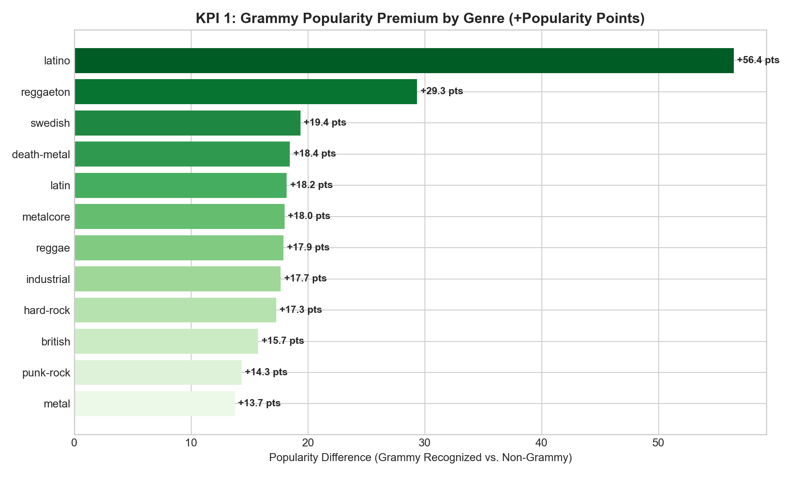
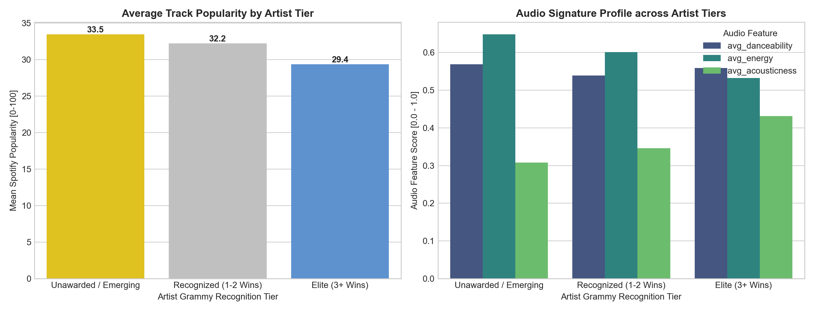
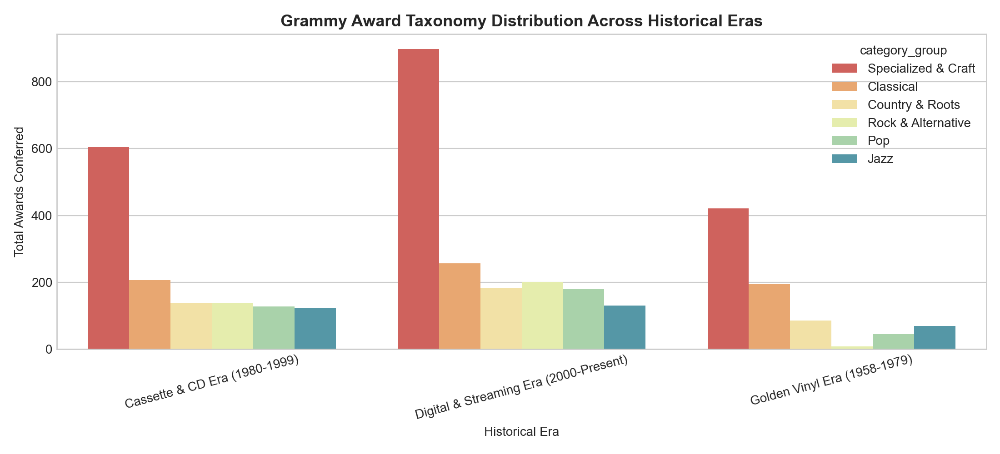

Faculty of Engineering (UAO) • ETL (G01) • Workshop 2 Data Warehouse Analytics
Evaluates commercial and acoustic differentiation between Grammy-recognized tracks and catalog standards across musical genres.

| Genre Name | Total Tracks | Avg Popularity (Grammy) | Avg Popularity (Standard) | Popularity Premium | Danceability (Grammy) |
|---|---|---|---|---|---|
| latino | 1,000 | 79.15 | 22.72 | +56.43 pts | 0.773 |
| reggaeton | 1,000 | 50.78 | 21.45 | +29.33 pts | 0.753 |
| swedish | 1,000 | 55.91 | 36.56 | +19.35 pts | 0.68 |
| death-metal | 1,000 | 50.26 | 31.82 | +18.44 pts | 0.336 |
| latin | 1,000 | 24.05 | 5.86 | +18.19 pts | 0.685 |
| metalcore | 1,000 | 59.65 | 41.66 | +17.99 pts | 0.453 |
| reggae | 1,000 | 37.3 | 19.38 | +17.92 pts | 0.751 |
| industrial | 1,000 | 48.3 | 30.63 | +17.67 pts | 0.537 |
Correlates cumulative career recognition (Grammy wins) with streaming audience depth and acoustic profile.

| Artist Recognition Tier | Unique Artists | Catalog Tracks | Avg Popularity | Avg Danceability | Avg Energy | Explicit (%) |
|---|---|---|---|---|---|---|
| Unawarded / Emerging | 17,105 | 103,825 | 33.45 | 0.569 | 0.648 | 8.81% |
| Recognized (1-2 Wins) | 342 | 6,058 | 32.22 | 0.539 | 0.601 | 6.62% |
| Elite (3+ Wins) | 181 | 4,116 | 29.37 | 0.559 | 0.532 | 4.74% |
Historical taxonomy distribution across Vinyl, Cassette/CD, and Digital Streaming eras querying dim_time and fact_grammy_awards.
